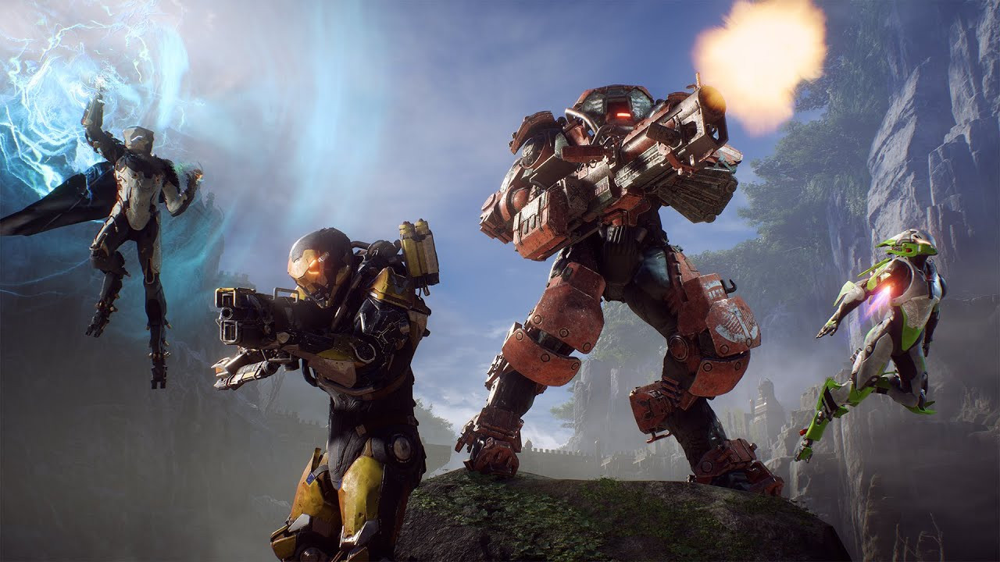
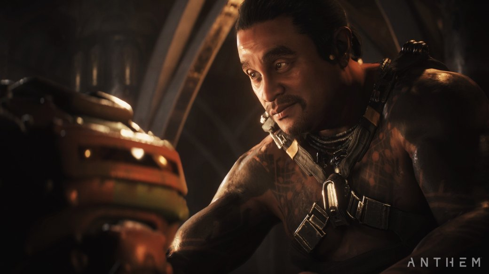
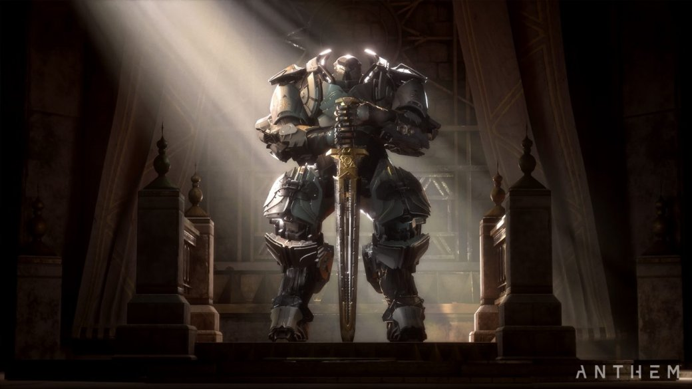
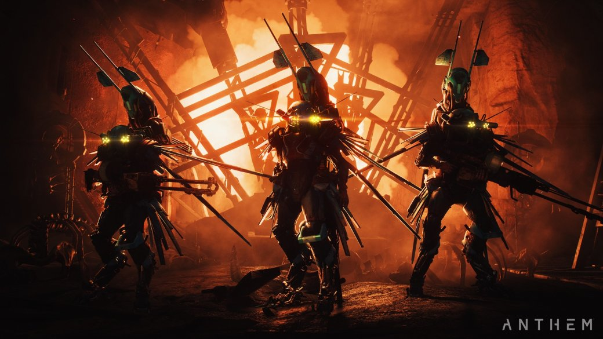
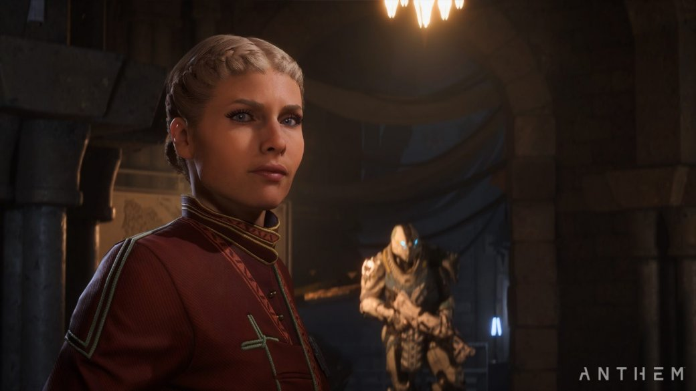
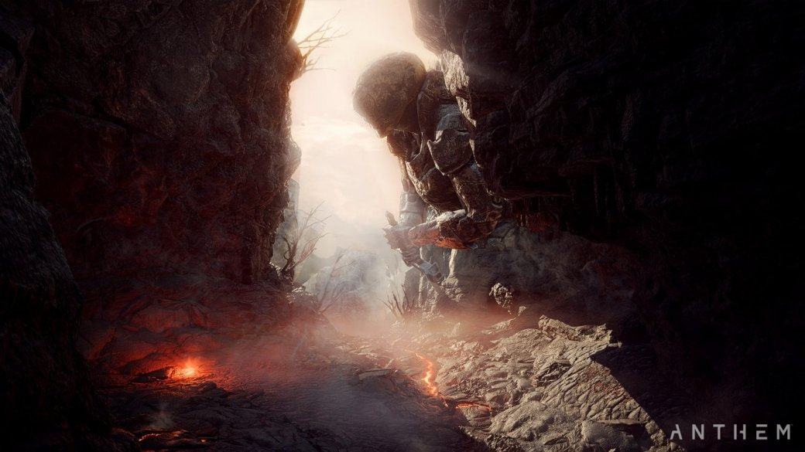

В Anthem я поиграл дважды — сначала в коротенькую демку на Gamescom, а теперь в уже практически финальный билд на отдельной презентации: основательно, 4 часа. Нам показали вступление, немного сюжетного контента и открытый мир, но что самое важное — эндгейм. Правда, о нем я пока не могу рассказывать (смогу чуть позже), зато обо всем остальном — сколько угодно. Впрочем, радикально мои «геймскомовские» впечатления не изменились, хоть и узнал я об игре гораздо больше. Поэтому местами, где это уместно, я буду использовать фрагменты из своего старого текста.
Про вступление скажу так — ну нельзя в первый час кидать квесты типа: «Ну-ка, собери пять сфер по карте и покидай их в ту яму. Не спрашивай зачем, очень надо». Я понимаю, что в Anthem большая часть заданий будет в том же духе (хотя разработчики отрицают) — жанр такой, на другом сфокусирован…, но для старта можно было бы что-то поэпичнее придумать, чтобы у новичка глаза загорелись! При этом картинка и ролики — огнище, ну что за дела, EA?
Графика-то вообще сумасшедшая — «Фростбайт» здесь в лучшей форме. И локации, и лица героев (даже не вспоминайте «Андромеду»), и сами костюмы-джавелины сделаны на высочайшем уровне. Джавелины хороши особенно — они будто живые, движущихся деталей на них десятки. А освещение какое! Все на самом деле именно так, как показывали в первых роликах, а ведь их когда-то многие сочли пререндером. Будь такое на старте поколения, мы бы с ума сошли.
Это все на ПК, разумеется, как будет в консольных версиях — не знаю, но явно похуже. Я бы сказал, что лет десять назад так CGI-вставки в играх выглядели, но правда в том, что во многих играх они смотрелись даже хуже.
Но Anthem, как я уже сказал, в целом о другом — это игра про геймплей. Да, странно осознавать, что в 2019 году бывает по-другому. Это невероятно отзывчивая, быстрая смесь Monster Hunter, Lost Planet, Warframe и, конечно же, Destiny. В трейлерах и геймплейных роликах персонажи кажутся очень тяжелыми, инертными, неповоротливыми. В действительности же они летают по экрану с невероятной скоростью и молниеносно реагируют даже на самые мелкие отклонения стика. Физику героев и общее ощущение от контроля я бы даже сравнил с Vanquish и Metal Gear Rising.
На презентации мне удалось достаточно поиграть за все классы, так что теперь могу подтвердить официально — скоростные и маневренные все, в том числе и танк-колосс. Но это не значит, что геймплей за всех похож. Даже на уровне перемещения по карте.
Тот же «Колосс», как и остальные, умеет летать и зависать с пушкой в воздухе, но вместо рывка-уворота у него щит, который он способен активировать и во время полета. За него мне понравилось играть больше всего — это идеальный выбор для соло-прохождения. «Перехватчик» гораздо быстрее во всем, его полетом можно управлять точнее, а еще у него есть аж тройной прыжок и очень сочная задница (даже если в костюме мужик, смиритесь). «Шторм» чуть медленнее, зато обладает модным плащом и умеет недолго парить без активации ранца, да и в воздухе способен висеть дольше всех, поливая оттуда врагов огнем— это откровенный «Варлок» из Destiny.
«Рейнджер» на фоне остальных самый усредненный и сбалансированный — такой «рыцарь» из ролевых игр и по совместительству стартовый класс в Anthem. Уверен, на поздних этапах много таких не встретишь. Если что, по ходу прокачки откроются все джавелины — в рамках одного класса вас запирать не будут.
Но кого бы вы не выбрали: стрелять и маневрировать на поле боя очень приятно, реально ощущаешь себя внутри продвинутого меха, чуда инженерной мысли, сливающегося с твоим собственным телом. Сама стрельба — вес оружия, звук, отдача, баллистика, реакция врагов на попадания — сильнее всего напоминает Destiny. Даже способности в демке были похожие. И это лестное сравнение, потому что Destiny, при всех своих проблемах — великолепный шутер. В Anthem мне только из пистолетов-пулеметов стрелять не понравилось — вот они какие-то совсем детские.
Особый упор разработчики делают на командном взаимодействии и комбинации приемов: один кинул во врагов заморозку, второй обрушился на них с ударом — взрыв, искры и разряды молний. Комбинации стихий и заклинаний как в ролевых играх вроде Dragon Age и Divinity.
Роли распределены ожидаемо. Колосс танкует, обвешан тяжелыми пушками и фигачит по площади. Шторм поддерживает команду с воздуха, снайперит и поливает врагов стихийной магией — важно кричать в войс-чат, кого и каким заклинанием ты бьешь, чтобы друзья не забывали делать комбо. Перехватчик летает по всей карте, стреляет из дробовика и пистолета, но сильнее он ориентирован на ближний бой — вкатывает целые слэшерные-комбо, да и ульта у него связана именно с милли-стычками. Разведчик, опять же, может взять почти любую роль и использовать любое оружие (как и остальные классы, кроме тяжелого — вот оно только для колоссов), но его стихия — штурмовые винтовки. То есть в рамках той же одиночной игры — например, прохождения сюжета — это реально неплохой боевик с четырьмя разными вариациями геймплея.
Важность командной работы в игре — как говорится, depends. Роли у классов четкие, но все они — самодостаточные бойцы, все могут быть в гуще событий. Поэтому на средней сложности достаточно не разбредаться и вместе стрелять по самым жирным врагам. А вот на сложной и выше — требования к организации команды взлетают в небо. Там уже каждую способность и каждую цель надо использовать с умом. Ошибка одного — вайп всей группы, прямо как во времена ванильной World of Warcraft! В этом плане Anthem многослойная, можете сами выбирать, как сильно вам хочется страдать — от приятной пробежки до настоящей потной каточки. Но по другому быть и не могло, ведь тут, в отличие от Destiny, есть автоподбор группы на любые активности. Если бы при игре с рандомами нам не давали сбросить сложность — было бы больно.
Если от Destiny в Anthem базовые геймплейные механики, то от Lost Planet и Monster Hunter локации и враги, чувство исследования нового дикого фронтира, населенного одновременно и жуткими, и прекрасными созданиями. Я обожаю такую стилистику «затерянного мира» с примесью постапокалипсиса, так что сеттинг BioWare мне продала давно. Да и общая предыстория — про мир, недоделанный и брошенный богами — лично мне до мурашек. Тем более на презентации получилось глубже заглянуть в лор и убедиться, что там есть интересное! Оказывается, тут и политика, и города-крепости, и древние цивилизации, и вообще ворох всего — BioWare иначе не могла, не зря шесть лет с игрой копалась.
Жалко, основной сюжет, судя по всему, дальше клише не уйдет — по крайней мере начинается Anthem с очередного злодея, желающего поработить всех во благо. Понадеюсь, что дальше будет лучше. В любом случае, сюжетный контент — не для галочки и его будет много, это, если верить разработчикам.
Впрочем, о дженерик-истории (и о дженерик-дизайне мехов, который все еще многих раздражает) непосредственно за игрой забываешь мгновенно. Но не только из-за крутой стрельбы, тактильности и кастомизации, позволяющей хоть мастера Чифа слепить, хоть аниме. В Anthem еще и потрясающее ощущение полета. Как «Человека-Паука» для PS4 продавали уже одни полеты на паутине, так Anthem продают реактивные ранцы. Игру в шутку прозвали лучшим симулятором Железного Человека, но ведь так оно и есть! Передать кайф полета на словах просто невозможно — придется дождаться и полетать лично, оно того стоит. Это куда круче прыжков из Destiny, уж поверьте. Тем более летать в игре можно довольно долго — секунд сорок подряд, а если в процессе пролететь под водопадом, к примеру, то костюм охладится и можно будет пролететь еще столько же.
При этом полет — еще и важный элемент боевой механики, в воздухе можно зависнуть и тут же открыть по врагу огонь и это киллер-фича. Маневрирование в воздухе вообще иногда важнее, чем на земле. Эта деталь по-хорошему усложняет игру, добавляет еще больше полезного пространства на уровни, а местами даже почти превращает Anthem в авиааркаду — подписываюсь под этим еще раз, наиграв десяток часов в Ace Combat 7. Именно благодаря механике полетов игра ощущается достаточно свежо и клоном ее обзывать не хочется.
Хотя, своего в ней вообще достаточно много. На каждую схожесть с Destiny и прочими найдется свое отличие. Вот город-хаб, обязательный элемент, но в Anthem он населен персонажами, с которыми можно общаться, даже выбирая варианты в диалогах — это не просто «распределительный центр». Вот паблик-ивенты со знакомыми механиками (отбейся, защити), но происходят они не на отдельных картах, а в огромном бесшовном открытом мире. Масса подобных деталей — в ролевой системе, в боевой механике, везде.
Разработчики провели по Anthem миллион стримов и уже давно показали игру почти со всех сторон. Все интересующиеся давно могли понять простую вещь — это отличная игра для любителей «дестини-лайк» направления (пора уже в отдельный жанр выделять, рядом с соулс-лайк). Если вы такое не любите — заскучать будет легко, но есть миллион других игр! А на фоне конкурентов Anthem выглядит отлично. BioWare решила попробовать себя в чем-то новом и приложила максимум усилий — позвольте уже студии не тухнуть в рамках одного направления. К тому же новую Dragon Age уже затизерили.